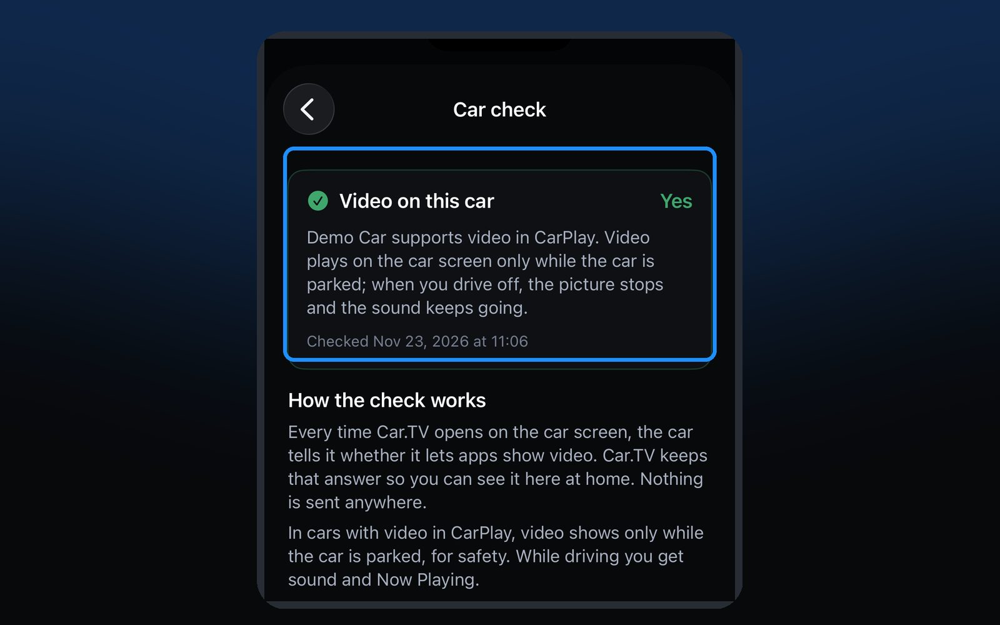

Come usare Car.TV
Ogni funzione passo passo, e come usarla in auto.
Indice
- Guarda il tour
- Connettiti a CarPlay
- Per iniziare
- TV in diretta
- Guida TV
- Libreria
- I miei video
- Musica
- Playlist
- Una playlist
- Il player
- Modalità auto
- Salvati
- Browser
- Trasferimento Wi-Fi
- Impostazioni
- Domande
Guarda il tour
Connettiti a CarPlay
- Verifica la tua autoCar.TV mostra i video sullo schermo dell’auto solo nelle auto che supportano i video in CarPlay, con iOS 26.4 o versioni successive. Le altre auto riproducono l’audio. In Impostazioni › Verifica auto scopri cosa può fare la tua auto.

- Con il cavo o senza filiCollega l’iPhone alla porta USB CarPlay dell’auto con un cavo, oppure usa CarPlay wireless se la tua auto lo supporta.

- Attiva CarPlay sull’iPhoneImpostazioni › Generali › CarPlay › scegli la tua auto. Attiva “Consenti CarPlay quando bloccato”.

- Trova Car.TV sullo schermo dell’autoTocca Car.TV nella schermata Home di CarPlay. Non c’è? Sull’iPhone: Impostazioni › Generali › CarPlay › la tua auto › Personalizza › App.

- Scegli cosa guardareTV in diretta, I miei video, Musica e Playlist sono sullo schermo dell’auto, come sul telefono.

- Video a auto parcheggiataQuando l’auto si muove, CarPlay ferma l’immagine e Car.TV continua con l’audio: sul telefono appare “Schermo dell’auto · solo audio”.

- Tasti al volanteDurante la TV in diretta, successivo e precedente cambiano canale. Puoi disattivarlo in Impostazioni › Riproduzione.
- Passeggeri: Modalità autoSul telefono, Modalità auto offre riquadri e tasti grandi. Chi guida tenga gli occhi sulla strada.

Per iniziare
- Benvenuto in Car.TVLa tua TV in diretta, film, video e musica, sull’iPhone, su una TV e sullo schermo dell’auto quando è parcheggiata. Ecco un tour di 1 minuto.
- Aggiungi qui di tuttoUna playlist IPTV (M3U), un portale Xtream, un server Jellyfin, Emby o Plex, una cartella cloud o video da File e Foto.
- Cerca ovunqueCanali, film, serie, i tuoi video e brani.
- ImpostazioniLe tue sorgenti, Premium, lingua, Modalità auto, il blocco genitori e questa guida.
- HomeRiprendi da dove avevi lasciato: Continua a guardare, In onda ora e Novità nella tua libreria.
- TV in direttaTutti i canali, per paese o con filtri. Tieni premuto un canale per la sua guida e i Preferiti.
- LibreriaPrima i tuoi: I miei video, Musica e Playlist si riproducono offline. Film e Serie arrivano dalle tue sorgenti.
- SalvatiI tuoi preferiti e download, per quando non c’è segnale.
- Ancora nessuna playlist?Prova i canali di esempio e apri i film per vedere come funziona tutto.
- Il playerSi apre a schermo intero. Scorrilo verso il basso e continua a riprodurre in una barra piccola mentre navighi.
- Porta i tuoi fileInvia video e musica da un computer con Trasferimento Wi-Fi, oppure salvali dal web con il Browser.
- Usi Car.TV in auto?Scopri passo passo come connettere CarPlay. Puoi rivedere questo tour quando vuoi in Impostazioni › Come usare Car.TV.
TV in diretta

- Trova un canaleCerca qualsiasi canale per nome.
- Due layout, paesi, filtriCorsie o Righe; canali per paese; filtri per lingua, categoria e qualità.
- Tieni premuto un canaleLa sua guida, i Preferiti e Correggi guida quando manca il palinsesto.
Guida TV
- Scorri nel tempoTocca un programma in onda per guardarlo.
- RecuperaI programmi passati dei canali con archivio offrono Guarda dall’inizio.
Libreria
- I tuoi fileI miei video, Musica e Playlist. Si riproducono offline, in viaggio e in auto.
- Dalle tue sorgentiFilm e serie dalle tue playlist e dai tuoi server. Filtra per sorgente o categoria e ordinali.
- Cerca in questo scaffaleCerca solo nello scaffale che stai guardando.
- La Libreria ricordaSi apre sull’ultimo scaffale che hai usato.
I miei video
- Tieni premuto un videoRiproduci dopo, Aggiungi a playlist, Rinomina, Scegli un’immagine, Sposta nella cartella, Condividi o Elimina.
- Seleziona più videoSposta, metti in coda o elimina più video insieme.
- Ordina e visualizzaPer data, nome, dimensione, durata o ultima riproduzione, a griglia o in elenco. Qui trovi anche lo spazio.
- Aggiungi videoDa File o Foto, da un computer con Trasferimento Wi-Fi o dal web.
Musica
- Brani, Album, ArtistiSfoglia la tua musica come preferisci.
- Scorri un branoA destra per aggiungerlo a una playlist. A sinistra per modificarne i dettagli o eliminarlo. Tieni premuto per Riproduci dopo.
- Timer di spegnimentoLa musica si ferma da sola dopo il tempo che scegli.
Playlist
- Nuova playlistMescola video e brani nell’ordine che vuoi, per i sedili posteriori o per il viaggio.
- ImportaPorta una playlist .m3u da un’altra app.
- Playlist smartSempre aggiornate: aggiunti di recente, non ancora visti, video brevi e altro.
Una playlist

- La tua copertinaScegli una copertina da Foto o un fotogramma di un video: ⋯ › Copertina.
- Riproduci o casualeL’intera playlist, offline se tutto è su questo dispositivo.
- Ripeti, velocità, presentazioneOgni playlist ha la sua ripetizione e la sua velocità. Aggiungi foto e scorreranno a schermo intero mentre suonano i brani.
- AltroAggiungi video o brani, modifica i dettagli, fissa in alto, duplica, esporta come M3U. Trascina per riordinare; scorri a sinistra per rimuovere.
Il player

- Tocca l’immagineMostra o nasconde i controlli.
- Salta 15 secondiIndietro o avanti di 15 secondi; il tasto centrale mette in pausa.
- Immagine, audio e altroAdatta, Riempi o Zoom; traccia audio; sottotitoli; velocità; sincronizzazione A/V.
- Riproduci su una TVAirPlay, Google Cast o una smart TV DLNA sulla tua rete Wi-Fi.
- Modalità autoTasti grandi per i passeggeri.
- Continua la riproduzioneChiudi o scorri verso il basso: la riproduzione continua nella barra piccola.
Modalità auto

- Per i passeggeriRiquadri e tasti grandi. Chi guida tenga gli occhi sulla strada.
- Esci da Modalità autoTorna all’app completa.
Salvati
- Preferiti e downloadTieni premuto un canale o apri un film e tocca Aggiungi a Salvati. I download si riproducono anche senza segnale.
Browser
- Cerca o inserisci un indirizzoLa pagina iniziale conserva i tuoi preferiti e i siti che visiti spesso.
- PannelliPiù pagine insieme e pannelli privati che non salvano la cronologia.
- Salva da questa paginaSalva musica e video che hai il diritto di conservare. I brani vanno in Musica, i video in I miei video.
Trasferimento Wi-Fi
- Avvia il serverPoi apri l’indirizzo mostrato su un computer collegato alla stessa rete Wi-Fi e trascina i file.
- Tieni aperta questa schermataI trasferimenti si interrompono se esci da questa schermata. I brani vanno in Musica, i video in I miei video.
Impostazioni
- Le tue sorgentiAggiungi, modifica, aggiorna o disattiva playlist e server.
- Questa guidaRivedi il tour, connetti CarPlay e leggi la guida nella tua lingua.
Domande
Perché lo schermo dell’auto riproduce solo l’audio mentre guido?
È così che funzionano i video in CarPlay, per sicurezza: l’immagine appare solo con l’auto parcheggiata. Quando l’auto si muove, CarPlay ferma l’immagine e l’audio continua. Nessuna app può cambiarlo.
Car.TV non è sullo schermo della mia auto. Perché?
Car.TV appare solo nelle auto che supportano i video in CarPlay, con iOS 26.4 o versioni successive. Controlla Impostazioni › Generali › CarPlay › la tua auto › Personalizza › App e apri Verifica auto nelle Impostazioni di Car.TV.
Car.TV include dei canali?
No. Car.TV riproduce ciò che aggiungi: una playlist o un portale IPTV a cui hai accesso, il tuo server multimediale o i tuoi video e la tua musica. Prova la playlist di esempio per vedere come funziona.
Cosa si riproduce senza internet?
Tutto ciò che è in I miei video e Musica, i tuoi download e le playlist composte da questi. Una playlist ti avvisa quando un elemento richiede internet.
Come aggiungo i miei video e la mia musica a Car.TV?
Da File o Foto con il pulsante +, da un computer con Trasferimento Wi-Fi, con AirDrop o il pulsante Condividi, oppure dal web con il Browser.
Come creo una playlist con una presentazione di foto?
Libreria › Playlist › Nuova, aggiungi brani, poi Aggiungi una presentazione e scegli le foto. Riproduci la playlist e le foto riempiono lo schermo mentre suonano i brani.
Le mie playlist appaiono sugli altri miei dispositivi?
Sì, con Premium e Sincronizzazione iCloud attiva in Impostazioni. Video e brani restano sul dispositivo su cui sono stati aggiunti, quindi una playlist su un altro dispositivo mostra ciò che quel dispositivo contiene.
Car.TV raccoglie i miei dati?
No. Non ci sono account, pubblicità o tracciamento. Le tue sorgenti, playlist e foto restano sui tuoi dispositivi e, se lo attivi, nel tuo iCloud.
Non guardare mai video mentre guidi. CarPlay mostra i video solo con l’auto parcheggiata; durante la guida, chi guida deve solo ascoltare.